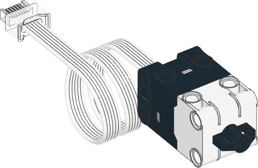

| ✅ | ✅ | ✅ | ✅ | ✅ | ✅ | ❌ |
|---|
Force Sensor

- class ForceSensor(port)
LEGO® SPIKE フォースセンサー。
- Parameters:
port (Port) – センサーを接続するポート。
使用例
力と動きを測定する
from pybricks.parameters import Port
from pybricks.pupdevices import ForceSensor
from pybricks.tools import wait
# センサーを初期化する。
button = ForceSensor(Port.A)
while True:
# このセンサーから取れる情報をすべて読み取る。
force = button.force()
dist = button.distance()
press = button.pressed()
touch = button.touched()
# 値をprintする
print("Force", force, "Dist:", dist, "Pressed:", press, "Touched:", touch)
# センサーボタンを押して値がどう変わるか見てみよう。
# 出力を読み取れるよう少し待つ。
wait(200)
ピークの力を測定する
from pybricks.parameters import Port
from pybricks.pupdevices import ForceSensor
from pybricks.tools import wait
# センサーを初期化する。
button = ForceSensor(Port.A)
# ボタンが押されるまで待つ関数。離されるまでに検出した
# 力の最大値を記録し続け、最後にその最大値を返す。
def wait_for_force():
# 力がほぼ0の間は何もせずに待ち、力がかかるのを待つ。
print("Waiting for force.")
while button.force() <= 0.1:
wait(10)
# 次に、力が再び0になるまで待って「離された」を検出する。
print("Waiting for release.")
# 離されるのを待つ間、力を読み続けて
# 最大値を覚えておく。最大値を0で初期化しておき、
# より大きな力を検出するたびに更新する、という仕組み。
maximum = 0
force = 10
while force > 0.1:
# 力を読み取る。
force = button.force()
# 測った力が最大値を超えたら更新する。
maximum = max(maximum, force)
# 少し待ってからもう一度測る。
wait(10)
# 最大の力を返す。
return maximum
# センサーボタンが押されるまで待ち続ける。押されたら
# 最大の力を表示して最初から繰り返す。
while True:
peak = wait_for_force()
print(f"Released. Peak force: {peak} N\n")